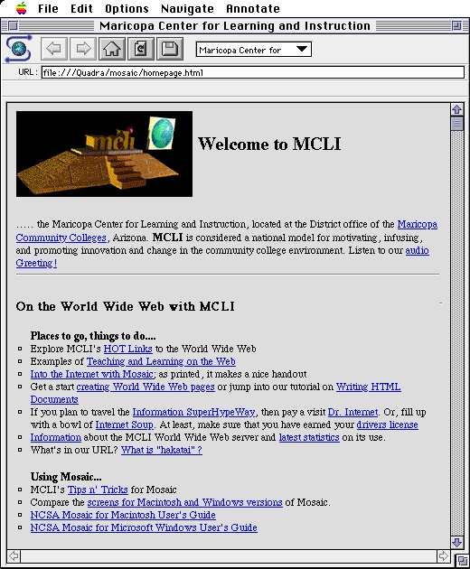

Parce qu'il souhaitait mettre en relation tous les documents scientifiques produits par les chercheurs du CERN à Genève, Tim Berners-Lee a créé le protocole HTTP et le langage HTML.

Quand il a voulu présenter son projet devant la communauté des chercheurs de l'hypertexte, il a rencontré un large scepticisme. Nul ne pensait que ce bidouillage pouvait représenter de la recherche. Ses propositions ont été rejetées des principaux congrès hypertextes à la fin des années 80.
Depuis, le succès du web, amplifié par la parution du navigateur Mosaic en 1993, a permis à Tim Berners-Lee d'acquérir une reconnaissance mondiale, de présider le W3C, et de devenir Lord en 2004.
Depuis les présentations de pages par Mosaic, le web a beaucoup évolué, et permet de séparer radicalement :